They say bigger isn't always better, but in the case of these large
dog breeds, we beg to differ. From fluffy Newfoundlands to sleek
Great Danes, these gentle giants make wonderful family pets and,
despite their large size, not every breed needs a lot of space to
run around in (Mastiffs, for example,
have fairly low exercise requirements and are happy
to relax at home for most of the day).
Before you adopt a giant dog breed, the
American Kennel Club
suggests new owners factor in the training time that's essential for
having a well-behaved pet as it's essential for large dog breeds
that will grow to weigh as much as an adult human. It's also
important to keep in mind that
larger dogs often cost more to care for, so be sure to budget for extra food, larger
beds, and nutritional
supplements, which help keep bigger dogs' joints healthy (they're
carrying around a lot of weight, after all).
Once you choose the large dog breed that's right for you, you'll
want to pick the
perfect
name
to give to the newest member of your family. You can also look into
dog subscription boxes
for treats for your pooch and, for yourself, browse
fun gifts
for dog lovers. Read on to see which big pooch is a fit for you, with info from
the American Kennel Club.
1
Bernese Mountain Dog
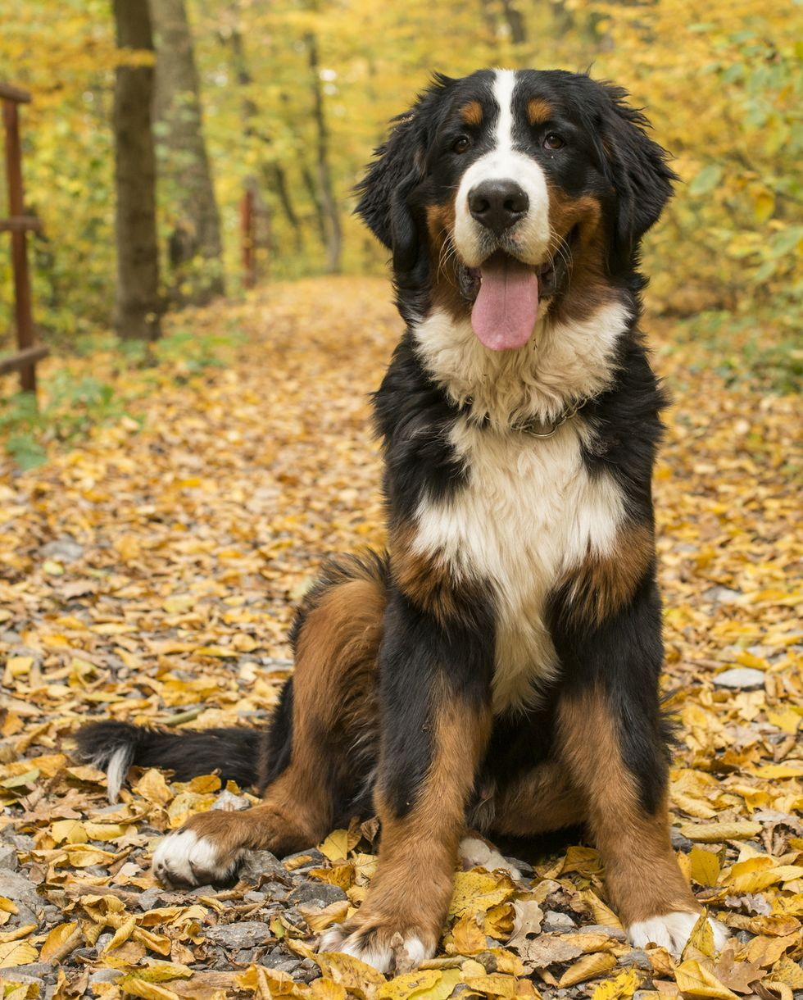
Paul Biris // Getty Images
Bernese mountain dogs
are affectionate and good natured, making them especially ideal for
families with young children. They were originally bred to work on
farms in
Switzerland, which means they do just fine in cold climates.
Height:23-27.5 inches
Weight:70-115 pounds
Life Expectancy:7-10 years
2
Great Dane
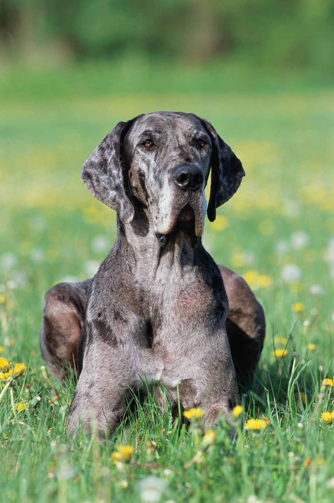
Martin Ruegner // Getty Images
Regal, dependable, and friendly,
these gentle giants
are taller than most full-grown people when they stand on their hind
legs and can reach 32-inches at the shoulder on all fours. Their
coat comes in a variety of hues including the
black-and-white
"harlequin" patchwork pattern.
Height:28-32 inches
Weight:110-175 pounds
Life Expectancy:7-10 years
3
Mastiff
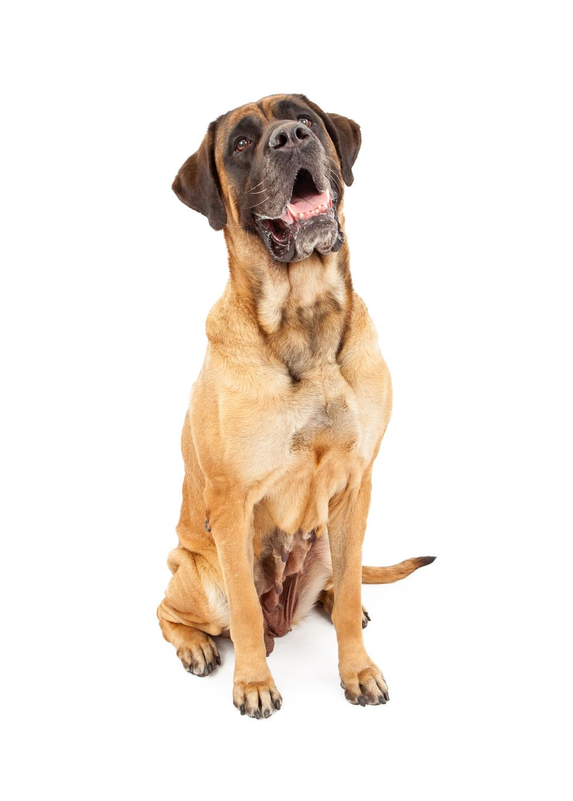
adogslifephoto // Getty Images
Mastiffs
may look imposing (males often weigh more than a full-grown man and
are at least 30 inches at the shoulder) but they are kind-hearted,
docile dogs at heart. They can even be a bit shy, so early
socialization is especially important.
Height:27.5 inches and up
Weight:120-230 pounds
Life Expectancy:6-10 years
4
Newfoundland
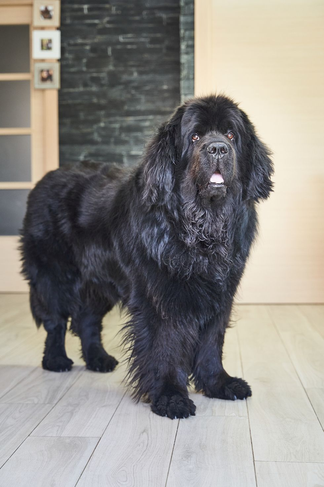
Roger Diaz Gomez // Getty Images
Newfoundlands
are devoted, sweet, and patient. According to the American Kennel
Club, the breed originated in Canada where they were working dogs
aboard fishing ships, specializing in water rescues (so they're
brave, too!). They're easy to train, and easy to love.
Height:26-28 inches
Weight:100-150 pounds
Life Expectancy:9-10 years
5
Golden Retriever
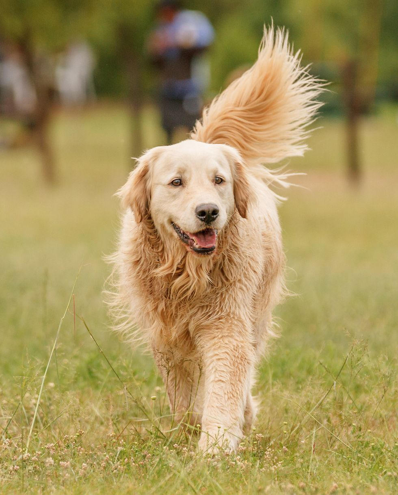
John McKeen // Getty Images
Golden retrievers
are loyal and intelligent, and are especially great choices for
active owners as they require a good deal of daily exercise. They're
also extroverts, known for being extra gentle with kids and other
dogs, too.
Height:21.5-24 inches
Weight:55-75 pounds
Life Expectancy:10-12 years
6
Leonberger
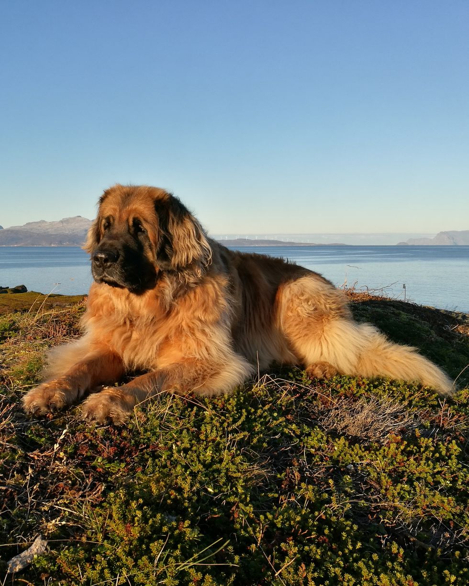
Andreas Nordvang Mathisen / EyeEm // Getty Images
Leonbergers, named for the city in
Germany where they were first bred, were
originally meant to be pets to members of royal families (King
Umberto I of Italy, Tsar Alexander II of Russia, and England’s
prince of Wales
all
owned "Leos"). Their stately appearance, playful, calm nature, and friendly
demeanor makes them excellent companions for non-royal owners, too.
Height:25.5-31.5 inches
Weight:90-170 pounds
Life Expectancy:7 years
7
Greater Swiss Mountain Dog
PhotoStorm22 // Getty Images
Greater Swiss mountain
dogs, a.k.a "Swissies," are sociable and sweet, and also make excellent
watch dogs. Originally bred in the Swiss Alps, they're sturdy and
athletic, perfect companions for hiking and camping trips.
Height:23.7-28.5 inches
Weight:85-140 pounds
Life Expectancy:8-11 years
8
Labrador Retriever
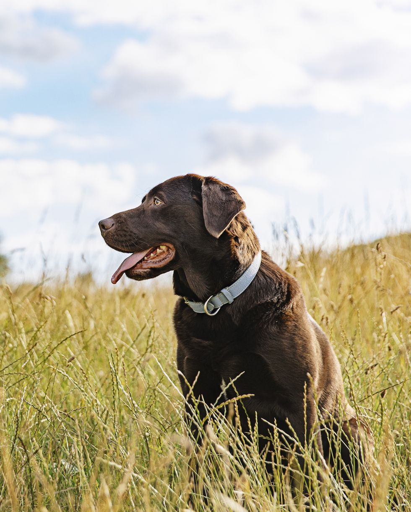
Justin Paget // Getty Images
Labradors are about as loyal and lovey-dovey as they come, which is
why they top the list of
most popular dog breeds
in the U.S. Their coat comes in three colors—black, chocolate, and
tan—and they're ideal for people who love to be active outdoors as
labs require lots of exercise.
Height:21.5-24.5
Weight:55-80 pounds
Life Expectancy:10-12 years
9
Saint Bernard
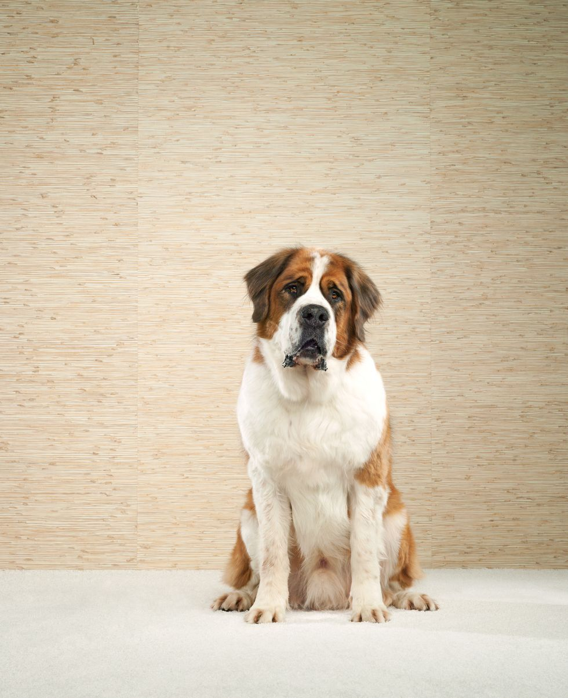
Catherine Ledner // Getty Images
Saint Bernards
have big hearts to match their big bodies—they are playful, eager to
please, and especially good with children. Though they can grow up
to 30 inches, they don't require a lot of exercise. Saint Bernards
are social and happiest when they're with their families.
Height:26-30 inches
Weight:120-180 pounds
Life Expectancy:8-10 years
10
Giant Schnauzer
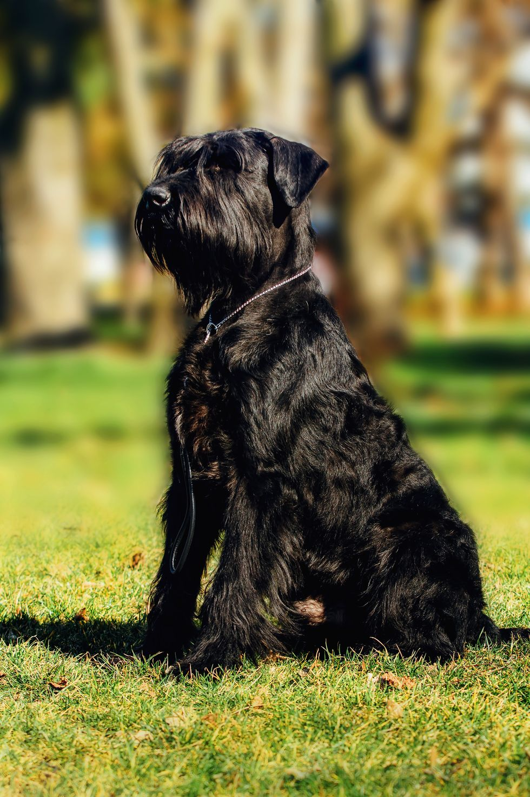
Voltgroup // Getty Images
These handsome dogs
are known for their loyalty, affection toward their families, and
for being easy to train. Owners should be sure to schedule weekly
brushes of their dense coat, which comes in black or salt and
pepper.
Height:23.5-27.5 inches
Weight:55-85 pounds
Life Expectancy:12-15 years
11
Irish Setter
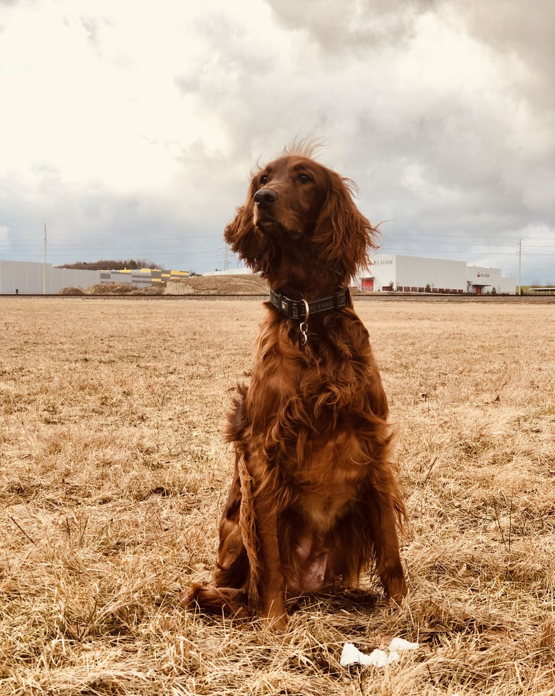
Getty Images
Outgoing and eager-to-please,
Irish Setters
make excellent family dogs. They're easy to train, just know they're
especially active dogs who require regular exercise.
Height:25-27 inches
Weight:60-70 pounds
Life Expectancy:12-15 years
12
German Shepherd
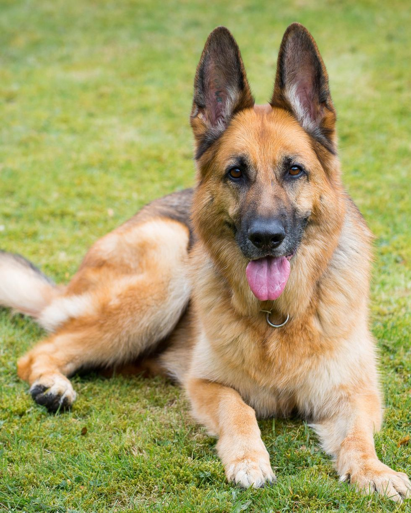
Stuart Vine // Getty Images
German Shepherds
are handsome, athletic, and smart as a whip. First bred as a herding
dog in Germany, today they're one of the
most popular dog breeds
in the U.S.
Height:22-26 inches
Weight:50-90 pounds
Life Expectancy:7-10 years
13
Old English Sheep Dog
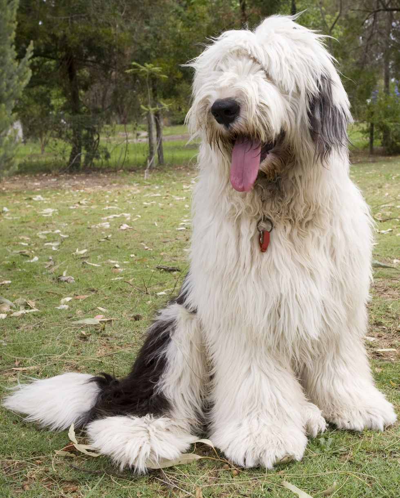
tap10 // Getty Images
You may recognize the
Old English Sheep Dog
from
The Little Mermaid
(Prince Eric had one as a pet) and just like in the film, these dogs
are playful, intelligent, and loyal. They're social too, and are
happiest hanging with their families. Just be prepared from extra
grooming time to take care of their super shaggy coat.
Height:21 inches and up
Weight:60-100 pounds
Life Expectancy:10-12 years
14
Great Pyrenees
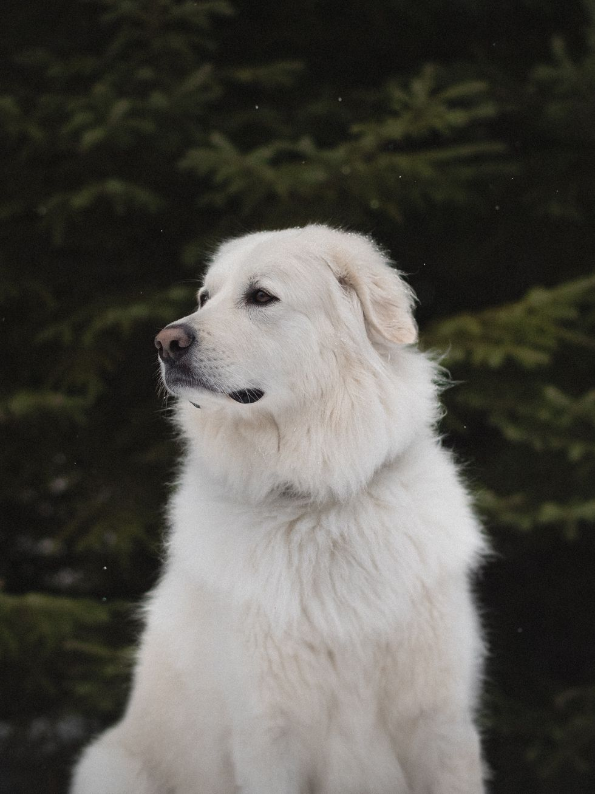
Getty Images
Originating in the Pyrenees Mountains as a guard dog for livestock,
Great Pyrenees
are especially calm, dignified dogs, and can even be a bit shy
around strangers. Their thick white coat is actually fairly
low-maintenance as its dirt and tangle resistant, and they'll stay
happy and healthy with moderate exercise.
Height:25-32 inches
Weight:85 pounds and up
Life Expectancy:10-12 years
15
Rhodesian Ridgeback
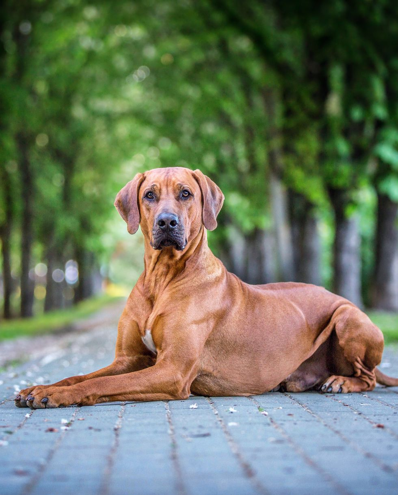
AsyaPozniak // Getty Images
Regal and well-behaved,
Rhodesian Ridgebacks
are also very affectionate, so they need lots of together time with
their owners. They do well with other animals, and their short,
shiny coat requires little grooming.

Conversation
2 Comments